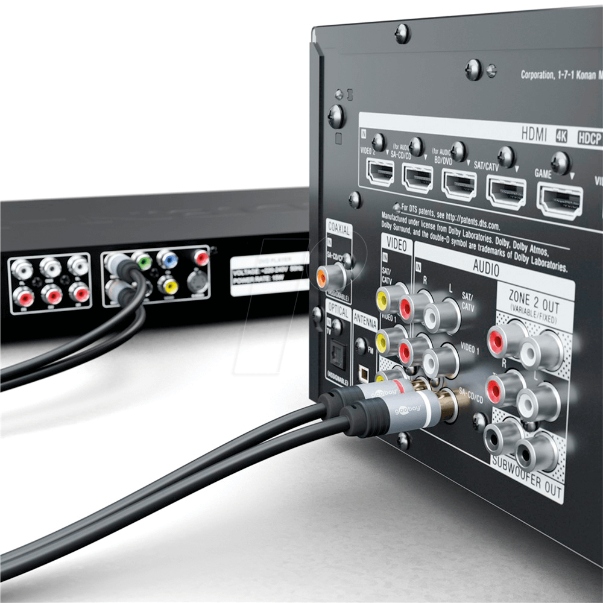

Fysieke laag

Wat is de fysieke laag?
De fysieke laag van een computer is de laag die je kunt zien en aanraken. Dit zijn bijvoorbeeld de muis, het beeldscherm, het toetsenbord, de stekkers, etc. Dit zijn de fysieke delen van de computer waarmee je interactie hebt en die je kunt aanraken. Zonder deze laag werkt de computer niet. De gebruiker wil bijvoorbeeld op een link klikken, maar dat kan niet zonder de fysieke laag. De knop waarop gedrukt wordt, hoort namelijk ook bij de fysieke laag.
De fysieke onderdelen laten de computer dus werken.
Processor (CPU)
De processor heeft twee belangrijke delen: de ALU (Arithmetic Logic Unit), die rekent, en de Control Unit, die de instructies volgt en de andere onderdelen aanstuurt.
De CPU verwerkt informatie en berekent dingen, zoals het optellen van getallen.
Werkgeheugen (RAM/ROM)
Dit is tijdelijke opslag waar de computer snel dingen kan plaatsen die hij op dat moment nodig heeft.
ROM is de plek waarin de computer belangrijke informatie opslaat die niet verandert.
Bus
Dit is de manier waarop verschillende onderdelen van de computer met elkaar communiceren.
Von Neumann-architectuur
Dit is een naam voor de manier waarop computers werken. Het idee is dat zowel de programma's als de gegevens in hetzelfde geheugen opgeslagen worden.
De computer leest en schrijft daarin.
Moederbord
Dit is een grote printplaat waarop alle onderdelen van de computer zijn bevestigd en op elkaar kunnen reageren.
Een uitgebreide uitleg is te vinden op een andere pagina.
System-on-a-chip
Dit is een soort kleine computer die in één enkele chip is ingebouwd. Het bevat de CPU, geheugen en andere dingen die een computer nodig heeft om te werken.
Permanent geheugen/opslagmedia
Dit zijn plaatsen waar de computer dingen kan opslaan die niet verloren gaan als je de computer uitzet, zoals harde schijven en SSD's.
Randapparatuur
Dit zijn alle extra dingen die je kunt aansluiten op je computer, zoals toetsenborden, muizen, printers en luidsprekers.
Verbindingen: kabels/interfaces
Dit zijn de snoeren en stekkers waarmee de computer met andere dingen kan praten. Het zijn dus bijvoorbeeld een laadkabel, of een kabel die gebruikt wordt om oortjes of een koptelefoon aan te sluiten.